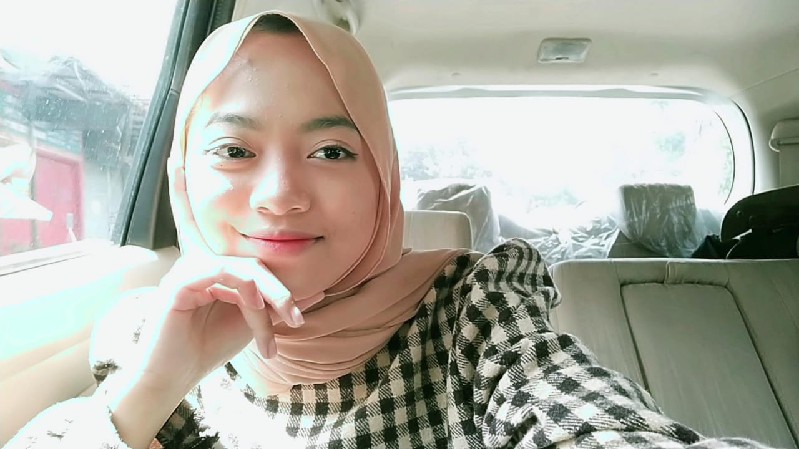

My Curiculum Vitae

Saya adalah Mariya Alqibtia anak ke- 4 dari 5 bersaudara, saat ini saya sedang menjalani studi S1 di Universitas Pendidikan Indonesia Prodi Sistem Informasi Kelautan Angkatan 2020 semester 3
Biodata Pribadi
- Nama : Mariya Alqibtia
- Tempat, Tanggal Lahir : Bandung, 31 Maret 2001
- Jenis Kelamin : Perempuan
- Agama Islam
- Email : mariyaalqibt@upi.edu
Riwayat Pendidikan
- SD : SDN Coblong
- SMP : MTs Persis 1 - 2 Bandung
- SMA : Pasundan 8 Bandung
- S1 : Universitas Pendidikan Indonesia
Riwayat Organisasi
- Panitia Asrama Ceria tahun 2021
- Panitia MOKAKU tahun 2021